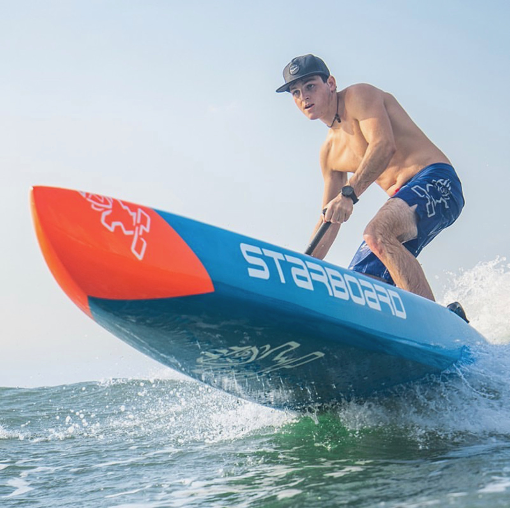
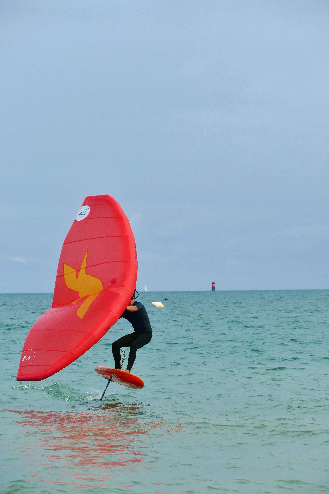

Welcome in my world 🏄♂️
I pratice watersports since 15 years and I'm a top athlete in stand up paddle at national and international level. I also like photography and drone filming.That's the reason why I enjoy being in the ocean all the time, and spread my passion to my friends.
Youtube ChannelFoiling Universe
Foiling allows you to fky above water just like an airplane in the sky. With hydrodynamic forces you can lift you board in the air and enjoy foiling with no noises at fast speeds.
Windsurf Universe
I started windsurf at the age of 6 years old with my dad. Since the first day I have never stop windsurfing. I try to travel as much as possible to explore new places to practice and meet new windsurfers ! I'm specialized in slalom windsurfing wich combine speed and power. I can reach speeds up to 30 knots with represent 60km/h.

Wingfoil Universe
Wingfoil is a young sport that works with a small sail called WING, and a foilboard. Its like kitesurf but easier and faster.

Stand Up Paddle Universe
Stand Up Paddle racing is a powerfull sport that need a strong body and powerfull muscles. We paddle in waves, ocean swell, on flat water and all this during most of the time 2 hours in a row on 20km-30km distances.